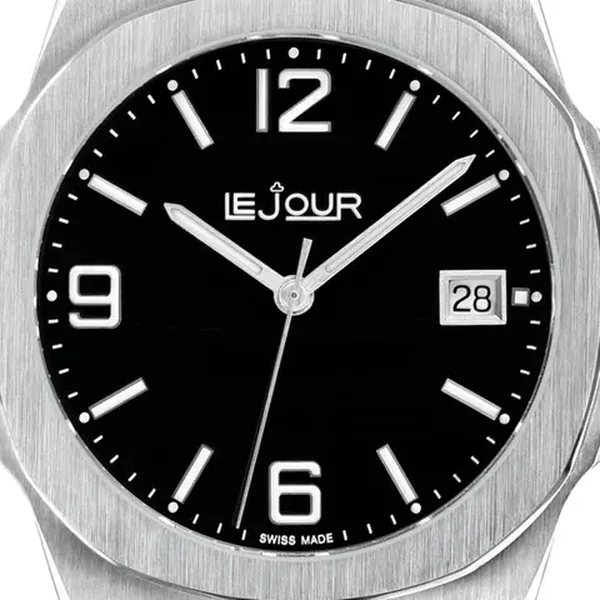
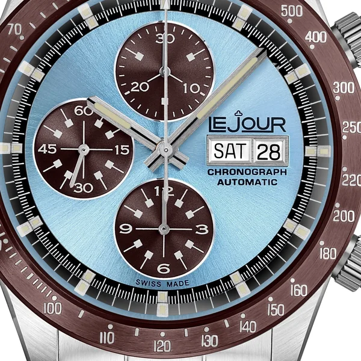
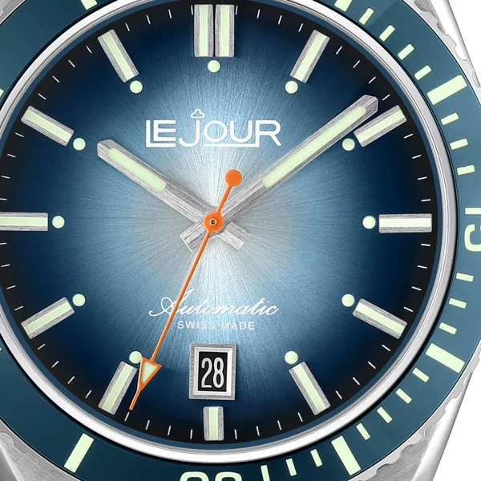
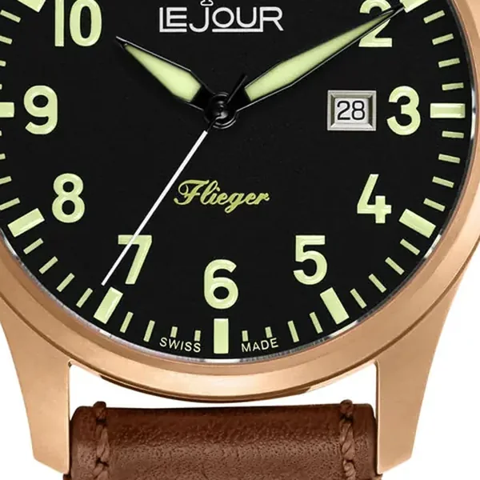
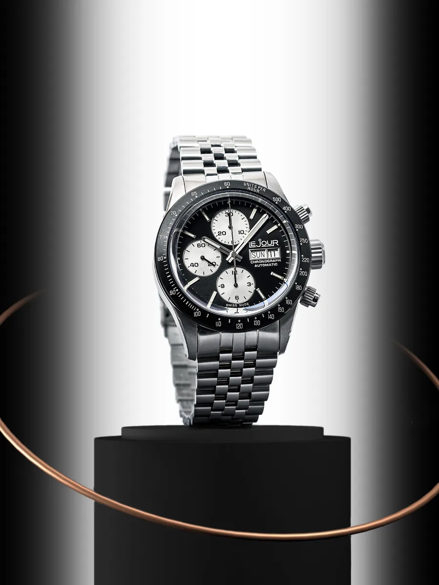

Le Jour is French for the day.
A collection of dials.
Fifty-three watches, each a small painting you wear. Walk through the rooms.
Enter the first room
Fardón 38, Malachite
316L stainless steel · 38 mm
Sellita SW200 automatic
LJ-FD-002 · USD 1,980
Room I
Stone
Malachite grows in bands, and no two slices have the same pattern. The dial you get is yours alone.
Fardón 38, Malachite
316L stainless steel · 38 mm
Sellita SW200 automatic
LJ-FD-002 · USD 1,980

Fardón 38, Onyx
316L stainless steel · 38 mm
Sellita SW200 automatic
LJ-FD-001 · USD 1,980
Room II
Colour
Rosso, Racing Green, Sky and Tobacco. On the chronographs, choosing the colour is half the pleasure.

RMC Chronograph 40, Rosso
316L stainless steel · 40 mm
Sellita SW500 automatic
LJ-RMC-006 · USD 2,250

Corsa Master Chronograph 42, Racing Green
316L stainless steel · 42 mm
Sellita SW500 automatic
LJ-CM-005 · USD 2,250

Corsa Master Chronograph 42, Sky and Tobacco
316L stainless steel · 42 mm
Sellita SW500 automatic
LJ-CM-003 · USD 2,250
Room III
Texture
Hobnail, sunray, a fine grain. Dials made to catch the light from every angle.

Brooklyn 40, Light Blue
316L stainless steel · 40 mm
Sellita SW200 automatic
LJ-BR-005 · USD 1,280

Delmare Diver 41, Blue
316L stainless steel · 41 mm
Sellita SW200 automatic
LJ-DM-003 · USD 1,380

Seacolt Diver 42, Blue
316L stainless steel · 42 mm
Sellita SW200 automatic
LJ-SCD-002 · USD 1,280
Room IV
Metal
CuSn8 bronze darkens with wear, in a pattern nobody can plan. The case keeps a diary.

Hammerhead Bronze 39, Green
Bronze, CuSn8 · 39 mm
Sellita SW200 automatic
LJ-HB-002 · USD 1,580

Flieger Bronze 45, Black
Bronze, CuSn8 · 45 mm
Sellita SW200 automatic
LJ-FL-001 · USD 1,180



From the archive · June 1980
One watch, two names.
A dealer catalogue from June 1980 lists the Le Jour 7203 beside the Heuer Pasadena and calls them the exact same watch. Le Jour at USD 300, Heuer at USD 354. Heuer built chronographs under the Le Jour name. That page is where our story begins.
Read the story of June 1980Duties and VAT included
Paid at checkout. What you see is what you pay.
Tracked by FedEx
From our hands to your door, followed all the way.
Sellita inside
Movements every good watchmaker knows.
10% on your first order
When you join the letter from Le Jour.
The letter from Le Jour
Every two weeks: new watches and stories from the archive. 10% on your first order when you join.